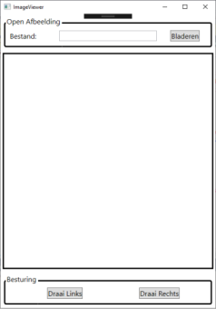

Reeks 01: Inleiding C#, OOP in C#, UML, Unit Testing, WPF
Korte introductie C#
Je zal merken dat C# veel gelijkenis vertoont met Java. Beide talen zijn strongly typed, class-based object-oriented
en maken gebruik van een intermediaire code (bytecode in java, CIL in .NET) die door een runtime geïnterpreteerd worden. Maar ook de syntax van beide talen is heel gelijkaardig.
Toch bestaan er ook heel wat verschillen tussen beide talen. Enkele van deze verschillen zul je in dit labo al tegenkomen.
Om te programmeren in C# maak je bovendien van een andere Integrated Development Environment (IDE) gebruik, meer bepaald Visual Studio.
Visual Studio heeft als voordeel dat het een enorm goede debugger heeft (je kan heel gemakkelijk breakpoints toevoegen
en de huidige toestand van je programma inspecteren), en je kan verschillende projecten bundelen in een solution.
Bovendien kan je eenvoudig je code exporteren naar een bibliotheek, assembly genaamd, die je dan in andere projecten kunt toevoegen.
In de module LABO vind je introductie_C_.pdf - deze bevat een korte samenvatting van C#.
Tijdens deze labo's leer je ook gebruik maken van de MSDN library. Deze is lokaal geïnstalleerd op de labotoestellen (maar je kan ze ook online raadplegen). Tijdens testen kan je de lokale MSDN library gebruiken.
Een goed punt om te starten zijn de C# Guide en de C# Programming Guide (zoek deze op in de lokale MSDN library die ook tijdens testen beschikbaar is).
1. Eerste solution / eerste project / eerste klasse
Alle opgaven van dit labo worden in één solution gemaakt.
- Maak een nieuwe solution aan in Visual Studio en neem als startproject een Console Application (.NET Framework) in Visual C#.
De klasse Program.cs wordt aangemaakt en deze bevat het hoofdprogramma static void Main(string[] args).
- Voeg een eerste eenvoudige klasse
Person toe. Deze klasse stelt een persoon voor en heeft:
- een attribute (
string name). Voorzie ook de readonly property Name.
- een constructor met 1 parameter: de naam van de persoon.
- een readonly property (
string WelcomeMessage). Deze geeft een string terug van de vorm 'Hello <Name>'.
- Gebruik deze eenvoudige klasse in het hoofdprogramma. Voorzie het volgende:
- Vraag via de console de naam van de gebruiker en maak een object aan van de klasse
Person.
- Schrijf de output van
WelcomeMessage naar het scherm.
2. Overerving en abstracte klassen
Voeg de klasse Student toe aan je project. Een student is een persoon die naast een naam ook een studentennummer heeft (geheel getal). Implementeer de volgende zaken:
- De naam en het inschrijvingsnummer worden via de constructor ingesteld.
- De property
WelcomeMessage geeft nu een string terug van de vorm 'Hello <Name>, your student number is <Nr>'.
Test deze klasse uit in je hoofdprogramma. Welke string krijg je terug in onderstaand codefragment? Kan je dit verklaren?
Person p = new Student("John Doe",20180189);
string output = p.WelcomeMessage;
In Java kan je via instanceof nagaan of een object van een bepaald type is. Kan je hiervoor een variant vinden in C#? En hoe kan je de naam van de klasse opvragen?
Maak nu van de klasse Person een abstracte klasse. Moet je veel zaken wijzigen in je code?
Hint: bij overerving en abstracte klassen zijn er enkele belangrijke verschillen met Java! Zoek in de (lokale) MSDN library de betekenis op van volgende modifiers:
virtual, abstract, override en new. Test dit grondig uit in je code!
3. UML
Een goed ontwerp start met het maken van een UML-diagramma.
Je kan een UML laten genereren door gebruik te maken van PlantUML. Handig is de online PlantUML-editor.
Tip: Geen icons gebruiken met: skinparam classAttributeIconSize 0
De meeste IDEs hebben ook een plugin/extensie die plantUML ondersteunt. Voor VS Code voeg je de extentie  toe, en installer je de graphviz binary.
toe, en installer je de graphviz binary.
Opdracht: Maak een eenvoudig UML-diagramma van de eerste oefening met PlantUML
4. Access Modifiers
In een goed ontwerp is het belangrijk om de verschillende access modifiers (private, protected, public, ...) correct te gebruiken.
Het is wel zo dat deze modifiers in verschillende programmeertalen een verschillende mening kunnen hebben. Onderstaande figuur
toont een belangrijk verschil tussen oudere programmeertalen zoals SmallTalk en recentere talen zoals Java.
Bron: Concepts, Techniques, and Models of Computer Programming, by Peter Van Roy and Seif Haridi
Experimenteer met de access modifiers en ga na wat de betekenis is van private en protected in C#.
Stel dit schematisch voor zoals in bovenstaande figuur.
Merk je een verschil met Java? In C# bestaat er bovendien nog een vierde access modifier die betrekking heeft op de assembly.
Zoek de naam van deze modifier op en experimenteer er mee binnen je project.
5. Unit Testing
In Visual C# kan je eenvoudig Unit Testen toevoegen, net zoals je in Java gebruik kon maken van JUnit.
Voeg een nieuw project toe (Add project) aan je solution van het type Unit Test Project (.NET Framework).
Om de code van een ander project te testen moet je een referentie (Add reference) toevoegen naar dat project. Je kan enkel public methodes/properties gebruiken (internal lukt dus niet).
|
|
|
Dit project bevat alvast een testklasse UnitTest1.cs - bekijk de code die gegeven is.
Een testklasse gebruikt het attribuut TestClass (boven de declaratie). Een testmethode gebruikt het attribuut TestMethod.
Je kan verschillende testmethodes groeperen in 1 testklasse.
Om strings te vergelijken kan je gebruik maken van Assert.AreEqual(string,string). Schrijf twee testen voor je eerste project. Hoe kan je een logische methode testen?
Om je programma te testen klik je bovenaan op Test - Run - All Tests (of gebruik je de shortcut CTRL+R / A ).
Bij de volgende oefening zal je ook moeten controleren of bepaalde code een exceptie opwerpt. Gebruik hiervoor het attribuut ExpectedException:
[TestMethod]
[ExpectedException(typeof(FormatException))]
public void TestException()
{
// Code die exceptie moet opgooien van het type FormatException.
}
6. FileSystem
In deze oefening maken we een eenvoudig bestandssysteem. Voeg een derde project FileSystem (type Console Application (.NET Framework)) toe aan je solution.
Het hoofdprogramma van de klasse is gegeven. Gebruik dit hoofdprogramma om je code te controleren (eventueel kan je voorlopig delen in commentaar plaatsen). Maak de folder Model, en voeg de eerste klasse FileSystem toe. Alle nieuwe klassen worden in de folder Model toegevoegd.
De output die je (uiteindelijk) zou moeten genereren vind je hier.
Lees eerst de opgave volledig door. Maak eerst een UML-diagram op papier of in PlantUML (voor je begint met de implementatie). Maak gebruik van de correcte UML-syntax zoals beschreven in hoofdstuk 1 van het handboek.
Er zijn 2 soorten bestanden: tekstbestanden (TextFile) en mappen (Folder).
Een map kan bestanden (submappen of tekstbestanden) bevatten. Op die manier ontstaat er een boomstructuur met bovenaan de wortelmap (root).
Belangrijke opmerkingen
- Hou er rekening mee dat er eventueel later nieuwe types bestanden bij kunnen komen, zoals bv. symbolische links.
- Let op stijl en leesbaarheid. Vermijd codeduplicatie! Maak waar nodig hulpmethodes.
- Maak gebruik van de C# Naming Guidelines.
Hieronder de beschrijving van de klasse die je uitwerkt in de folder Model:
De klasse FileSystemException
Deze klasse erft van Exception. Geef aan de constructor de reden van de fout mee (string).
De klasse File
Dit is de basisklasse voor een bestand (map, tekstbestand,...). Welk soort klasse gebruik je hiervoor?
Implementeer volgende zaken:
- De constructor krijgt de naam(
string) mee als parameter.
Indien de gegeven bestandsnaam null is of een schuine streep ('/') bevat, werp je een FileSystemException op.
- De property
Parent van het type Folder stelt de ouder in en geeft de ouder weer.
- Voorzie de readonly properties
Name en IsRoot. Indien de ouder null is, is dit een wortel (root).
- De readonly eigenschap
PathName geeft de naam van het bestand, voorafgegaan door de namen van de oudermappen
(te beginnen bij de wortel), gescheiden door schuine strepen ('/').
- De readonly eigenschap
ListName is een abstracte property zonder implementatie.
De klasse TextFile
Een tekstbestand bevat een tekst (string). Voorzie de volgende zaken:
- Bestandsnaam en tekstinhoud worden doorgegeven via de constructor.
- Voor de tekst voorzie je een publieke property.
- De (overschreven) eigenschap
ListName geeft de naam van het tekstbestand terug.
De klasse Folder
Bevat een HashSet van bestanden.
- Voorzie een constructor die de naam meekrijgt (maakt een lege map).
-
De methode
GetFile(name) geeft het bestand met gegeven naam terug.
Als deze map geen bestand met de gegeven naam heeft, wordt er null teruggegeven.
Indien nodig mag je alle bestanden overlopen.
Extra: Gebruik een indexer om een bestand op te halen met de opgegeven naam.
-
De methode
CreateTextFile(name) maakt een (leeg) tekstbestand met gegeven naam, voegt dit toe aan de map, en geeft dit terug.
Indien de gegeven name leeg is of de naam al bestaat in deze folder, werp je een FileSystemException op.
- De methode
CreateFolder(name) doet hetzelfde als de vorige methode, maar dan voor een (lege) submap.
- De eigenschap
ListName geeft de naam terug, gevolgd door een schuine streep ('/').
- De methode
PrintList() schrijft een lijst van bestanden in deze map uit (zoals 'ls' of 'dir).
De namen van submappen worden gevolgd door een schuine streep ('/').
- De methode
PrintTree(indent) schrijft recursief alle bestanden in de map uit, met twee spaties indentatie per niveau.
Indien nodig mag je ook in File deze methode implementeren. Hint: virtual.
De klasse FileSystem
Deze klasse bevat een wortel (en indirect de bijhorende boom), en een huidige map (current directory).
De klasse voorziet in de publieke interface naar de gebruiker toe, en handelt alle opgeworpen fouten af met een gepaste melding.
De default-constructor maakt de wortelmap aan met een lege naam en laat de huidige map wijzen naar de wortelmap.
De publieke methodes imiteren bekende shell-commando's:
- Het commando
cd(path) wijzigt de huidige map naar het opgegeven pad (string). Dit pad is ofwel "/", ofwel "..",
ofwel de naam van een submap van de huidige map (m.a.w. het pad bevat geen slashes).
Indien het gegeven pad ongeldig is (onbestaand, geen map, ...) toon je een foutboodschap (maar gaat het programma verder).
- Het commando
pwd() (print working directory) schrijft de padnaam van de huidige map uit.
- Het
dir() commando schrijft een lijst uit van alle bestanden in de huidige map.
- Het
tree() commando schrijft de bestandsboom vanuit de huidige map.
- Het
mktext(naam) commando maakt een leeg tekstbestand aan met gegeven naam. De fout die mogelijks opgeworpen wordt vang je op met een gepaste melding.
- Het
mkdir(naam) doet hetzelfde als het vorige commando, maar dan voor een submap.
Unit Testing
Voeg een Unit Test Project toe (of gebruik het project uit opgave 4). Voorzie in de testklasse een aantal zinvolle Unit Tests voor het FileSystem. Zorg er uiteraard voor dat geen enkele test faalt.
Uitbreidingen en bedenkingen
- Is het zinvol om de
HashSet te vervangen door een Dictionary? Waarom wel/niet?
- Momenteel heeft elke bestand een referentie naar zijn ouder, terwijl elke ouder een lijst heeft van zijn kinderen. Is deze dubbele referentie zinvol en kan je deze eventueel wegwerken? Waarom wel/niet?
- Voeg een indexer toe aan de klasse
Folder met dezelfde functionaliteit als de methode GetFile(name).
7. ImageViewer
In deze oefening maken we een eenvoudig programma om afbeeldingen te bekijken en te roteren.
Voor de uitwerking van deze oefening maken we gebruik van Windows Presentation Framework (WPF).
Voeg een nieuw project (type WPF Application) toe aan je solution. De functionaliteit van het programma is hieronder beschreven.

Mockup van de ImageViewer |
Het hoofdvenster bestaat uit 3 delen:
- In het bovenste gedeelte van het venster kan de gebruiker een afbeelding selecteren.
- Het middelste en grootste gedeelte van het venster wordt gebruikt om de afbeelding weer te geven (zie Image - BitmapImage) - zoek deze informatie ook op in de lokale Help.
- Het onderste deel van het venster bestaat uit 2 knoppen om de afbeelding respectievelijk in tegenwijzerzin (naar links) of in wijzerzin (naar rechts) te roteren.
|
Voor het reageren op knoppen zul je enkele EventHandlers moeten toevoegen aan MainWindow.xaml.
Dit kan ofwel automatisch via de designer of manueel via XAML code.
De methodes zelf implementeer je in de de code-behind file, MainWindow.xaml.cs.
Het is mogelijk en handig om via C# code nieuwe controls toe te voegen en bijhorende event handlers.
Opmerkingen:
- Zorg er voor dat de twee knoppen voor het draaien van de afbeelding niet ingedrukt kunnen worden als er nog geen afbeelding geladen is.
- Bij het openen van een nieuwe afbeelding reset je best de huidige rotatie (zodat de nieuwe figuur niet meteen gedraaid wordt).
Optionele uitbreidingen:
- Zorg er voor dat het programma mooi schaalt bij aanpassen van de grootte van het venster.
- Voorzie een extra Save knop die de gebruiker toelaat om de gedraaide afbeelding te bewaren op de harde schijf.